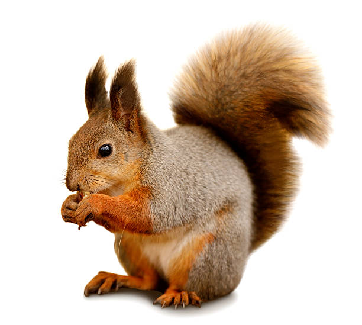
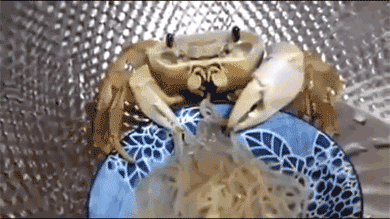
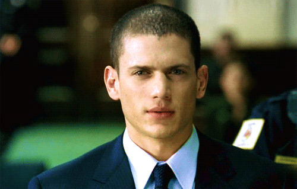
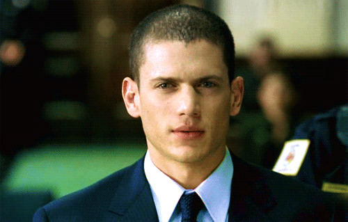

Zebra

Blah blah blah
WIEWIÓRKA
Wiewiórka ma duży, puszysty ogon w rudym kolorze oraz charakterystyczne spiczaste uszy. W Polsce gryzonie te znajdują się pod ochroną. Zwykle wiewiórki można zobaczyć na drzewach. Przemieszczają się niezwykle zwinnie i szybko, a w utrzymaniu równowagi pomaga im osiągający ponad 20 cm ogon.
Cechy wiewiórki:
Wiewiórka ma duży, puszysty ogon w rudym kolorze oraz charakterystyczne spiczaste uszy. W Polsce gryzonie te znajdują się pod ochroną. Zwykle wiewiórki można zobaczyć na drzewach. Przemieszczają się niezwykle zwinnie i szybko, a w utrzymaniu równowagi pomaga im osiągający ponad 20 cm ogon.
KRAB

 

TAKA CIEKAWOSTKA:
Wyobraź sobie, że Michael Scofield, genialny planista z "Prison Break", zamiast uciekać z więzienia, staje się… detektywem morskich tajemnic. Jego nowa misja to odkrycie, jak kraby, te zwinne, małe stworzenia, potrafią przechytrzyć wszelkie pułapki. Scofield, uzbrojony w swój niezwykły umysł, zauważa, że kraby, mimo swoich twardych pancerzy, potrafią prześlizgiwać się przez szczeliny, niczym on przez systemy zabezpieczeń. Jego strategia? Przeanalizować, jak kraby, z ich niebywałą zręcznością, znajdują wyjście w najtrudniejszych warunkach. Scofield zaczyna dostrzegać paralele – podobnie jak kraby, on sam potrafi przejść przez ciasne przestrzenie i wyjść z każdej opresji, nawet gdy wydaje się, że nie ma już drogi ucieczki. Kto by pomyślał, że geniusz Scofielda będzie mógł nauczyć się czegoś od tak małych, ale zarazem niezwykle sprytnych stworzeń? Kraby stają się jego inspiracją do opracowania nowej strategii… tym razem nie do ucieczki z więzienia, ale do rozwiązania zagadki morskich tajemnic!
HIENA


TAKA CIEKAWOSTKA:
Nie ma do tego :(